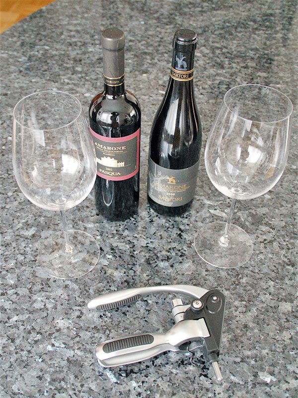

Giorno 6 di 7 · Giovedì 13 agosto · Verona
Degustazione alle 16, Carmina Burana all'Arena alle 21:30
📌 In sintesi
- Mattina e primo pomeriggio senza programma fisso: riposo, e magari Castelvecchio o il Giardino Giusti.
- 16:00-17:00: degustazione di vini con Virginia, Via Roma 10 — Soave, Lugana e Amarone della Valpolicella.
- 21:30: Carmina Burana di Carl Orff, Arena Opera Festival, Arena di Verona.
🕘 Itinerario della giornata
- 09:30Colazione con calma. Dopo cinque giorni pieni, oggi non c'è sveglia da rispettare.
- 10:30Castelvecchio, se non l'avete già visto: la fortezza scaligera sull'Adige, oggi museo civico.
- 12:00Giardino Giusti, in alternativa o in aggiunta: giardino rinascimentale all'italiana, con un punto panoramico in cima.
- 13:00Pranzo da Antica Trattoria Al Bersagliere, in un'antica cantina del XIII secolo — atmosfera d'altri tempi, risotto all'Amarone fra i piatti forti: senza fretta di rimettersi in cammino.
- 14:30Tempo libero. Riposo in hotel nelle ore più calde, o un giro senza meta nei negozi del centro.
- 15:45Verso Via Roma 10, a pochi minuti a piedi da Piazza Bra.
- 16:00Degustazione "Degusta i vini di Verona" con Virginia — un'ora, quattro vini: Soave (bianco secco e minerale), Lugana, e i vini della Valpolicella con un focus sull'Amarone DOCG e il suo appassimento, con abbinamenti gastronomici. Prenotata su Airbnb Experiences, gruppo piccolo (max 4 ospiti). Anticipata apposta rispetto a uno slot più tardo, per lasciare margine largo prima dello spettacolo.
- 17:00Fine della degustazione. Da qui la sera è tutta costruita intorno all'Arena, ma con calma: restano quasi due ore libere prima di cena.
- 17:15Tempo libero — una passeggiata verso Piazza Bra, un ultimo giro nei negozi, o semplicemente riposo prima di una serata che finisce tardi.
- 19:00Cena presto da Il Bacaro dell'Arena, Vicolo Tre Marchetti — trattoria a due passi dall'Arena, comoda apposta per stasera: con lo spettacolo alle 21:30 conviene cenare leggeri e con calma adesso, non dopo.
- 20:45Ingresso in Arena. I cancelli aprono con largo anticipo sull'orario di inizio: meglio essere seduti prima delle 21:15, soprattutto se il settore è a gradinata non numerata.
- 21:30Carmina Burana di Carl Orff, Arena Opera Festival 2026 — Orchestra e Coro areniano, nell'anfiteatro romano dove ci siete già passati mercoledì di giorno. Durata non lunghissima per gli standard areniani: è un titolo sinfonico-corale, non un'opera intera.
- ~23:00Rientro in hotel a spettacolo finito, con calma: domani è l'ultimo giorno e non c'è una sveglia da rispettare.
🗺️ La mappa del giro
🍷 Dove mangiare

- PranzoAntica Trattoria Al Bersagliere — cantina del XIII secolo, stile rétro, risotto all'Amarone: con calma, oggi non c'è fretta.
- Nel pomeriggioDegustazione con Virginia, Via Roma 10, 16:00-17:00 — Soave, Lugana e i vini della Valpolicella (Amarone DOCG incluso), con abbinamenti gastronomici. Prenota su Airbnb ↗.
- CenaIl Bacaro dell'Arena, Vicolo Tre Marchetti — presto e leggera, a due passi dall'Arena, prima dello spettacolo delle 21:30: in Arena non si cena, al massimo si porta un cuscino.
💡 Note e dritte
Perché niente più gita in Valpolicella. La degustazione con Virginia copre già Amarone e vini della Valpolicella, oltre a Soave e Lugana, con un sommelier del posto e senza bisogno di auto o cantina da scegliere. Il giorno prima (Giorno 5) avete comunque già visto tutta Verona di giorno: oggi si rallenta fino a sera, poi si chiude in grande con l'Arena.
La degustazione è stata anticipata apposta. Fra i tre slot disponibili (15:00, 16:00 e 17:00) avete scelto le 16:00-17:00 invece delle 17:00-18:00: con lo spettacolo alle 21:30 conviene chiudere prima e avere due ore buone di margine per una cena senza fretta, invece di uscire dalla degustazione a un'ora e mezza dall'ingresso in Arena.
Due impegni fissi, non improvvisati. Degustazione con Virginia, Via Roma 10, 16:00-17:00 (esperienza Airbnb, 38 € a persona, cancellazione gratuita fino a un giorno prima). Carmina Burana di Carl Orff, Arena di Verona, giovedì 13 agosto ore 21:30, Arena Opera Festival 2026 — biglietto da acquistare sul sito ufficiale del Festival, scegliendo il settore: gradinata non numerata è l'opzione più economica, poltroncine in pietra e platea salgono di prezzo. Se qualcuno del gruppo ha meno di 30 anni o più di 65, ci sono riduzioni del 10% su tutti i settori dei gradoni; sotto i 30 anni c'è anche un settore Platea dedicato a 30 €, finché c'è disponibilità. Serve un documento d'identità all'ingresso. Entrambe vanno ancora completate online: vedi Prenotazioni.
Castelvecchio e Giardino Giusti restano facoltativi. Se una delle due giornate precedenti si è già allungata su altro, oggi va bene anche non vederne nessuno dei due: quello che non si tocca è la sera.
Se oggi non gira. Degustazione e Carmina Burana non si toccano sono gli unici due impegni fissi della giornata, entrambi con orario preciso e biglietto nominale. Tutto il resto — Castelvecchio, Giardino Giusti, il giro nei negozi — è comprimibile o saltabile senza perdere nulla.